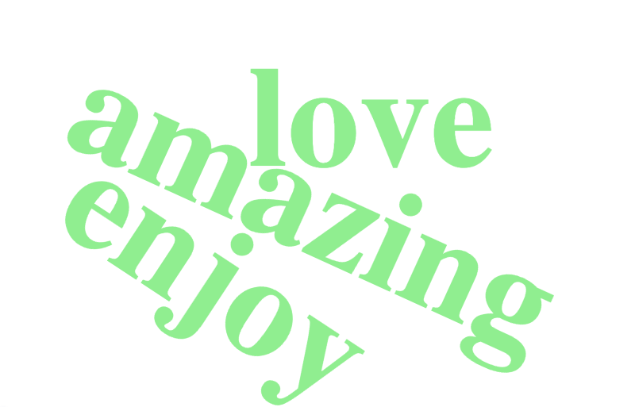
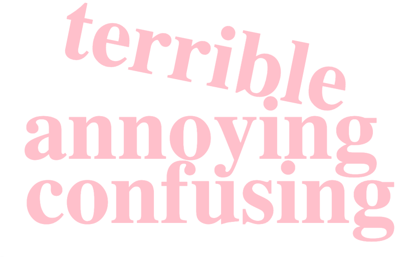

This project analyze sentiments from Twitter. Applying NLP to determine the overall sentiment (positive, negative, or neutral). And extract meaningful terms and visualize common terms using word clouds.
# install some packages. no need to install twice, so a "#" here.
# install.packages("tidytext")
# install.packages("wordcloud2")
# install.packages("webshot2")
# Load Libraries
library(tidyverse)## ── Attaching core tidyverse packages ──────────────────────── tidyverse 2.0.0 ──
## ✔ dplyr 1.1.4 ✔ readr 2.1.5
## ✔ forcats 1.0.0 ✔ stringr 1.5.1
## ✔ ggplot2 3.5.1 ✔ tibble 3.2.1
## ✔ lubridate 1.9.4 ✔ tidyr 1.3.1
## ✔ purrr 1.0.2
## ── Conflicts ────────────────────────────────────────── tidyverse_conflicts() ──
## ✖ dplyr::filter() masks stats::filter()
## ✖ dplyr::lag() masks stats::lag()
## ℹ Use the conflicted package (<http://conflicted.r-lib.org/>) to force all conflicts to become errorslibrary(tidytext)
library(ggplot2)
library(wordcloud2)
library(shiny)
library(webshot2)
library(htmlwidgets)
# Sample Data (not real data.)
text_data <- tibble(
id = 1:5,
text = c(
"I love the new version! It's amazing.",
"The update is terrible and annoying.",
"Not sure about the new feature, it's confusing.",
"I really enjoy using AI. the best!",
"AI destroys students' motivation to learn. Very disappointed."
)
)
# Clean and tokenize the text
clean_data <- text_data %>%
mutate(text = tolower(text)) %>% # Convert to lowercase, just for safe..
unnest_tokens(word, text) %>%
anti_join(stop_words) ## Joining with `by = join_by(word)`# Load the Bing sentiment lexicon
bing_sentiments <- get_sentiments("bing")
# Join sentiment data
sentiment_data <- clean_data %>%
inner_join(bing_sentiments, by = "word") %>%
count(sentiment, word, sort = TRUE)
print(sentiment_data)## # A tibble: 7 × 3
## sentiment word n
## <chr> <chr> <int>
## 1 negative annoying 1
## 2 negative confusing 1
## 3 negative disappointed 1
## 4 negative terrible 1
## 5 positive amazing 1
## 6 positive enjoy 1
## 7 positive love 1print(sentiment_data)## # A tibble: 7 × 3
## sentiment word n
## <chr> <chr> <int>
## 1 negative annoying 1
## 2 negative confusing 1
## 3 negative disappointed 1
## 4 negative terrible 1
## 5 positive amazing 1
## 6 positive enjoy 1
## 7 positive love 1# Rename the frequency column to 'freq' and ensure it's numeric
sentiment_data_clean <- sentiment_data %>%
filter(!is.na(word)) %>%
mutate(freq = as.numeric(n)) %>% # Rename and ensure numeric
select(word, freq, sentiment) %>% # Select only necessary columns
filter(!is.na(freq)) # Remove "NA"
print(sentiment_data_clean)## # A tibble: 7 × 3
## word freq sentiment
## <chr> <dbl> <chr>
## 1 annoying 1 negative
## 2 confusing 1 negative
## 3 disappointed 1 negative
## 4 terrible 1 negative
## 5 amazing 1 positive
## 6 enjoy 1 positive
## 7 love 1 positive# Create a word cloud for all words
wordcloud2(data = clean_data %>% count(word, sort = TRUE) %>%
rename(freq = n) %>% filter(!is.na(freq)))# Positive words cloud
positive_words <- sentiment_data_clean %>% filter(sentiment == "positive")
if(nrow(positive_words) > 0) {
wordcloud2(data = positive_words %>% select(word, freq), color = "lightblue")
} else {
print("No positive words found.")
}# Negative words cloud
negative_words <- sentiment_data_clean %>% filter(sentiment == "negative")
if(nrow(negative_words) > 0) {
wordcloud2(data = negative_words %>% select(word, freq), color = "pink")
} else {
print("No negative words found.")
}# Ha?! I don't have pic of negative and positive terms in my knit file. (Solved.)
# Save and Insert Word Clouds as Images
# Positive Word Cloud
wordcloud2(positive_words, color = "lightgreen") %>%
saveWidget("positive_wordcloud.html", selfcontained = TRUE)
webshot2::webshot("positive_wordcloud.html", "positive_wordcloud.png", vwidth = 800, vheight = 600)## file:////Users/zili/Documents/GitHub/Portfolio/positive_wordcloud.html screenshot completed
# Negative Word Cloud
wordcloud2(negative_words, color = "pink") %>%
saveWidget("negative_wordcloud.html", selfcontained = TRUE)
webshot2::webshot("negative_wordcloud.html", "negative_wordcloud.png", vwidth = 800, vheight = 600)## file:////Users/zili/Documents/GitHub/Portfolio/negative_wordcloud.html screenshot completed
# solved. now there's something in my second and third wordcloud plot.
# as well as in my knit file. # I got empty plot for positive & negative sentiments, so this chunk is to check why that happens.
print(sentiment_data)## # A tibble: 7 × 3
## sentiment word n
## <chr> <chr> <int>
## 1 negative annoying 1
## 2 negative confusing 1
## 3 negative disappointed 1
## 4 negative terrible 1
## 5 positive amazing 1
## 6 positive enjoy 1
## 7 positive love 1bing_sentiments %>%
filter(word %in% clean_data$word)## # A tibble: 7 × 2
## word sentiment
## <chr> <chr>
## 1 amazing positive
## 2 annoying negative
## 3 confusing negative
## 4 disappointed negative
## 5 enjoy positive
## 6 love positive
## 7 terrible negativesetdiff(clean_data$word, bing_sentiments$word)## [1] "version" "update" "feature" "ai" "destroys"
## [6] "students" "motivation" "learn"